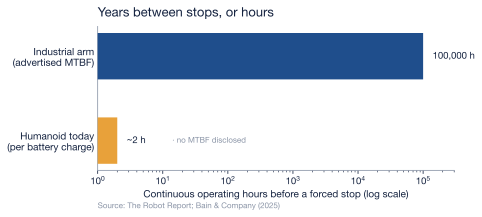

4 The Reliability Gap
Chapter 3 left a humanoid built, priced, and funded — but a robot that has been paid for has only reached the starting line. The test that matters comes next, in the working life: can the machine show up, day after day, and do the job without breaking? Industrial robots passed that test decades ago. Humanoids have not been running long enough for anyone to honestly say whether they can pass it at all — and that absence of evidence, as much as any number, is the finding of this chapter.
4.1 The proven machine
The industrial robot arm is one of the most reliable machines ever mass-produced, and it has the operating history to prove it. Manufacturers advertise mean-time-between-failures figures as high as 100,000 hours — more than eleven years of continuous running — and while independent researchers treat those marketing numbers with open skepticism, the skepticism cuts in an instructive direction (The Robot Report, 2019). A study spanning more than 400 factories, published in the International Journal of Performability Engineering and reported by The Robot Report, found that robot cells achieve about 88% availability — real downtime, not the advertised perfection — but that 80% of stoppages have nothing to do with the robot at all, tracing instead to the conveyors, sensors, grippers, and other peripherals around it (The Robot Report, 2019). The robot is implicated in only the remaining fifth — about 2.5% of total available time — and of that slice, only a quarter is the robot physically breaking; most of the rest are positional faults (The Robot Report, 2019). The headline MTBF may be marketing, but the underlying truth survives the debunking: the arm itself is almost never the thing that breaks. It is a solved problem, and it is solved because the machine is rigid, repetitive, bolted to a floor, and asked to do one motion a few million times.
4.2 The unproven machine
A humanoid is none of those things, and its reliability record reflects it — which is to say, there is barely a record at all. The most basic limit is the most telling, and it is not the one Chapter 2 priced: the battery may be cheap to buy — about 4% of the bill of materials in BofA’s 2030 projection — but it is still short, and most humanoid robots today operate for only about two hours on a single charge (Bain & Company, 2025). Bain & Company projects that better batteries could extend that to roughly six hours by 2030, but that a full eight-hour shift “could remain elusive” for a decade or more (Bain & Company, 2025). A machine that must stop to recharge three or four times a day has not yet earned the word reliable; it has not even reached the point where mean-time-between-failures is the binding constraint, because mean-time-between-recharges stops it first.
Behind that limit sits a deeper one: no manufacturer publicly discloses a humanoid MTBF, and Bain & Company’s 2025 survey of the field cites no reliability or total-cost-of-ownership figures at scale at all (Bain & Company, 2025). Most deployments remain pilots, still leaning on human input for navigation, dexterity, and task-switching, and Bain cautions that polished demonstrations “often mask technical constraints through staged environments or remote supervision” (Bain & Company, 2025). The reliability has not been measured because the machine has not yet run long enough, in enough places, to measure it. The figures that circulate for humanoid service intervals — every few hundred operating hours — trace not to fleet data but to analysts’ models; this report does not repeat them as fact, because none can be sourced to a machine that has actually logged the hours.
4.3 A gap measured against an absence
Set side by side, the two machines are separated by nearly five orders of magnitude — the industrial arm runs for years between failures while the humanoid runs for hours between recharges — but the more honest way to read the chart is that one bar is data and the other is a placeholder. We can state the industrial arm’s reliability because the world has measured it across hundreds of thousands of machine-years. We cannot state the humanoid’s, because the machine-years do not exist, and the limit we can measure — the battery — is so short that the question of long-run failure has not yet had the chance to be asked. A reliability gap this wide is not a tuning problem to be closed in a product cycle; it is the difference between a tool and a prototype.
That gap is also a cost the earlier chapters did not price. A machine that stops every two hours, is serviced on a schedule no one can yet quantify, and may be replaced rather than repaired when a newer model ships, consumes parts and labor across its whole working life — and those parts come from a supply chain that, by 2025, had become a front line in the trade war between the two superpowers. The next chapter follows the components across that border.